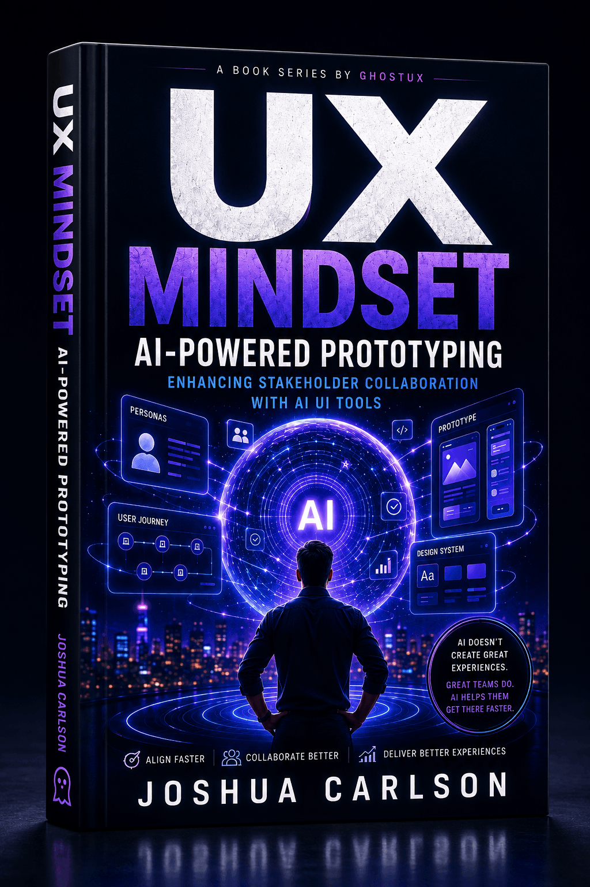

UX Mindset series · Featured title
AI-Powered
Prototyping
Enhancing Stakeholder Collaboration with AI UI Tools
AI doesn’t create great experiences. Great teams do. Learn how AI-assisted prototyping can help teams align faster, collaborate better, and turn uncertainty into something everyone can see, test, and improve.
- Align faster
- Collaborate better
- Deliver better experiences